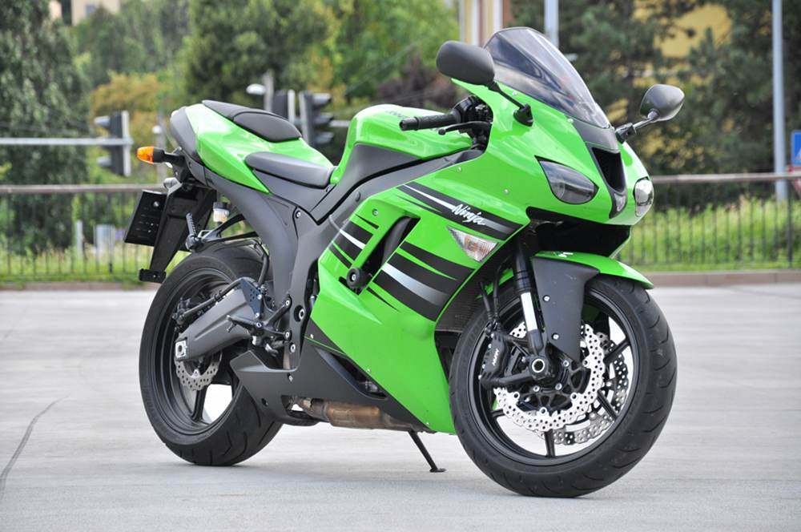
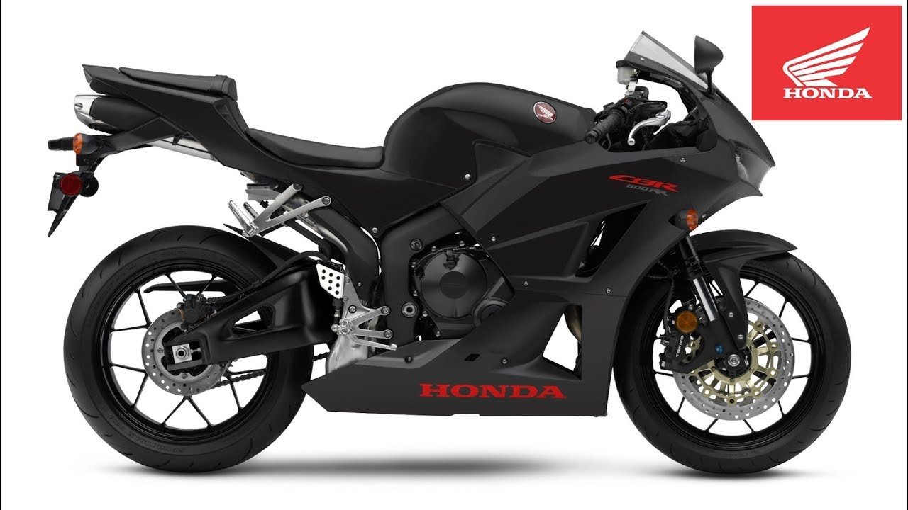
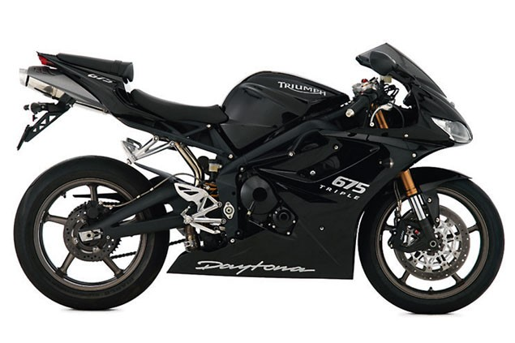
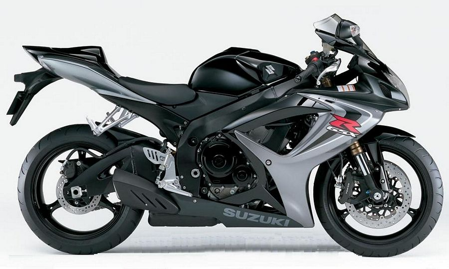

A legnépszerűbb használt 600-as sportmotorok
A 600-as sportgépek kategóriája mindig is nagyon népszerű volt (most már csak használtan az), de vajon melyek a legkedveltebb modellek másodkézből?
Azonnal szögezzük le, hogy az alábbi lista egy – mondjuk úgy – “ideálisabb piaci környezetben” született: a brit “second hand” vételeket összesítette a Visordown, a szupersport (600) kategóriás sportmotorokat illetően. A helyezésekhez fűződő megjegyzéseink azonban a magyar piacot “értékelik”.
A sorrend persze országonként változna, de a szigetország piaca van olyan erős, hogy érdemes legyen vele foglalkozni. A válság borzalmai egyébként friss vért pumpáltak a használt bringák vérkeringésébe (az új modellek – tömegek számára – elérhetetlensége okán), így talán ki lehet jelenteni, hogy az utóbbi években sohasem tapasztalt népszerűségnek örvendtek a használt (és nem 1-2 éves) 600-asok, ami egyes modellek diszkontárai mellett a nincs-más-út filozófiának is köszönhető.
Persze ugyanígy megtalálhatóak az értéktartóbb modellek (modell-generációk) is – az összefüggésekre a lista igyekszik rávilágítani.
1. KAWASAKI ZX-6R (636 2013-) – az új generációs kisNinja sajnos itthon nem tömegmodell (2 eladó használt van), de az eggyel korábbi generáció is (2008-2012) is hiánycikk (most épp 0db)…
2. Honda CBR600RR (2007-) – az újabb 600RR sikere sem meglepetés, itthon is van választék: a Yamahánál (általában) olcsóbban, a Suzukinál (általában) drágábban.
3. TRIUMPH DAYTONA 675 – nem meglepő a hazai gyártmány brit sikere, itthon viszont érthetetlenül alacsony az eladó példányok száma (összesen 2 használt); Másodkézből nem feltétlenül drágább a japánoknál.
4. YAMAHA R6 (2006-) – a szigetországban majdnem dobogós az R6R: ebből 10, korábbi generációsból 30 vár gazdára itthon, az azonon évjáratú GSX-R-eknél (és CBR-eknél) drágábban.

5. SUZUKI GSX-R600 (K6-) – a GSX-R-ek jellemzően 50-100ezer forinttal olcsóbbak a 600RR Hondáknál; itthon is sok (kb. 50) van eladósorban, korábbi generációs (szívlámpás, SRAD) modellek is, amik különösen jó vételnek számítanak.
